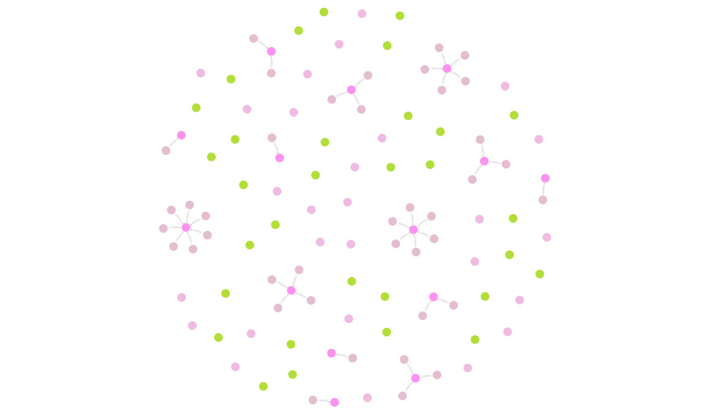
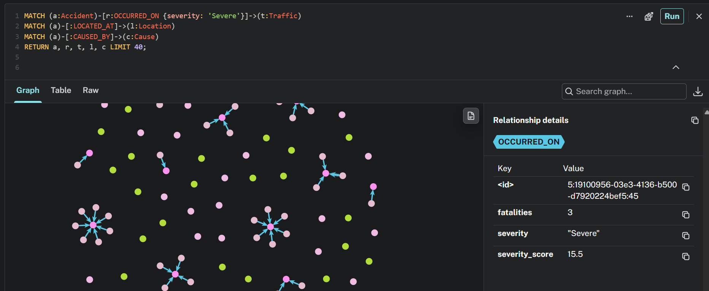
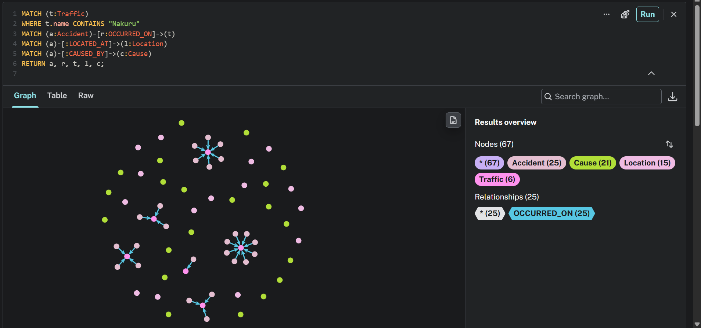

This deliverable documents the end-to-end design, implementation, and empirical evaluation of three non-relational database architectures across two distinct enterprise datasets:
.explain()), and aggregation pipelines.Six yearly datasets (2007–2012) containing 81,504 raw market trades were consolidated. Key transformations implemented:
Date, Adjusted) while 2007/2009–2012 used uppercase (DATE, Adjust)."7,800" → 7800) and stripped % characters from daily returns."-") with IEEE NaN / BSON null.datetime64[us]).Records were modeled into nested BSON documents for optimal locality of reference:
{
"code": "EQTY",
"name": "Equity Bank",
"date": ISODate("2007-01-02T00:00:00Z"),
"trading": { "day_price": 141.0, "volume": 7500, "change_pct": 2.13 },
"intraday": { "low": 140.0, "high": 145.0 },
"yearly_range": { "low": 19.5, "high": 36.5 }
}The Indexing Experiment: Querying Safaricom ('SCOM') in 2012 with volume > 1,000,000, sorted by date DESC:
| Indexing Scenario | Winning Stage | Docs Examined | Keys Examined | Returned Docs | Execution Latency | Speedup |
|---|---|---|---|---|---|---|
| Scenario 1: No Index | SORT → COLLSCAN | 81,504 | 0 | 220 | 83 ms | 1.0x (Baseline) |
Scenario 2: Single Index {'code': 1} |
SORT → FETCH | 1,146 | 1,146 | 220 | 21 ms | ~4.0x |
Scenario 3: Compound {'code': 1, 'date': -1} |
FETCH → IXSCAN | 251 | 251 | 220 | 13 ms | ~6.4x |
code) first, followed by Sort (date DESC), MongoDB read the index tree in sorted sequence—completely eliminating the in-memory sort and dropping examined documents to 251.
In distributed wide-column architecture, tables are designed strictly around target queries:
-- Historical Stock Lookups by Ticker
CREATE TABLE coursework_nse.stock_history_by_ticker (
code text,
date date,
name text,
day_price double,
volume bigint,
change_pct double,
PRIMARY KEY ((code), date)
) WITH CLUSTERING ORDER BY (date DESC);
-- Monthly Market-Wide Snapshots
CREATE TABLE coursework_nse.daily_market_snapshot (
year int,
month int,
date date,
code text,
name text,
day_price double,
volume bigint,
PRIMARY KEY ((year, month), date, code)
) WITH CLUSTERING ORDER BY (date DESC, code ASC);SELECT * FROM stock_history_by_ticker WHERE day_price > 100 triggered:
InvalidRequest: code=2200 [Invalid query] message="Cannot execute this query as it might involve data filtering and thus may have unpredictable performance... use ALLOW FILTERING".
Cassandra forbids unpartitioned full scans by default because broadcasting queries to all nodes breaks linear scalability. Forcing ALLOW FILTERING degraded latency to 31.51 ms.
Constructed in Neo4j using 78 geocoded crash records (375 fatalities), yielding 262 Nodes and 362 Relationships.
Rated severity scores directly onto [:OCCURRED_ON] relationships:
Severity Score = (total_dead × 2.5) + spot_freq + risk_weight
| Severity Parameter Level | Rated Links | Fatalities | Avg Severity Score | Classification Criteria |
|---|---|---|---|---|
| Severe | 56 links | 362 deaths | 20.54 | ≥ 3 deaths or High risk classification |
| Moderate | 13 links | 13 deaths | 5.42 | 1–2 deaths or Medium risk classification |
| Minor | 9 links | 0 deaths | 2.11 | 0 deaths or Low risk classification |


severity: "Severe", fatalities: 3, severity_score: 15.5) on the OCCURRED_ON relationship.

| Dimension | Relational (RDBMS) | Document Store (MongoDB) | Wide-Column (Cassandra) | Graph Database (Neo4j) |
|---|---|---|---|---|
| Core Data Model | 2D Tables & Tuples | Nested BSON Documents | Sparse Wide-Columns | Nodes & Relationships |
| Schema Design | Normalized 3NF | Hierarchical / Embedded | Query-Driven Denormalization | Property Graph Topology |
| Partitioning Mechanism | Range / Hash Sharding | Hash / Range via mongos |
Consistent Hashing Ring | Clustered / Fabric Sharding |
| Query Mechanism | Declarative SQL (JOINs) | MQL + Aggregation Pipeline | CQL (No JOINs allowed) | Cypher (Pattern Matching) |
| Performance Scaling | Vertical (Scale-Up) | Horizontal (Read Replicas) | Masterless Linear Write | Index-Free Adjacency (O(1)) |
All scripts and schemas are maintained in the version-controlled project repository: https://github.com/KelvinAbidha/Data-Warehousing-Project.
# 1. Start Cassandra & Neo4j containers
docker compose up -d
# 2. Run ETL pipeline for 81,504 market records
python src/etl.py
# 3. Execute MongoDB ingestion, indexing benchmarks & aggregations
python src/mongo_manager.py
# 4. Execute Cassandra keyspace creation & query modeling
python src/cassandra_manager.py
# 5. Execute Neo4j Property Graph construction & Cypher analytics
python src/graph_manager.py